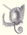

Faune de Madagascar
|

|
Cet article est une ébauche concernant la zoologie.
Vous pouvez partager vos connaissances en l’améliorant (comment ?) selon les recommandations des projets correspondants.
|
La faune de Madagascar et très riche et comporte 80% d'espèces endémiques.
{kind=link}
Cette exceptionnelle originalité est due au fait que Madagascar s'est séparée du continent africain il y a environ 100 millions d'années. L'isolation de l'île, l'absence de certains prédateurs, a contribué à l'évolution originale des espèces actuelles.
Sommaire[masquer] |
Invertébrés[modifier]
{kind=link}
L'estimation du nombre d'espèces d'invertébrés malgaches est de l'ordre de 100 000.
Une de ces espèces endémiques est un coléoptère, dont le nom vulgaire est le coléoptère girafe.
On a observé plus de trois mille espèces de papillons, pour la plupart endémiques, notamment dans les forêts humides de l'Est. Certains sont particulièrement appréciés des collectionneurs, tels que le Comète de Madagascar (Argema mittrei) ou l'Urania (Urania ripheus), ce qui est une des causes de leur régression.
Poissons[modifier]
L'ichtyofaune d'eau douce autochtone est curieusement plutôt pauvre.
À l'inverse, les poissons marins comprennent de très nombreuses espèces.
Amphibiens[modifier]
- Grenouilles :
Madagascar abrite de nombreuses espèces d'amphibiens, incluant plusieurs grenouilles endémiques (99 % des 373 espèces sont endémiques), dont par exemple la minuscule Mantella auranthium, de couleur orange.
Reptiles[modifier]
Plus de 300 espèces de reptiles ont été répertoriées sur l'île [1]
Plusieurs espèces de tortues vivent à Madagascar, dont par exemple la tortue Pixis, qui aime sortir par temps de pluie.
Madagascar abrite aussi plusieurs espèces de serpents, dont le Boa malgache aux reflets bleus.
Madagascar héberge un grand nombre de caméléons dont des endémiques comme le caméléon panthère, Furcifer pardalis, qui témoigne d'un exceptionnel dimorphisme de couleur (le mâle et vert avec des taches rouges et jaunes, alors que la femelle est orange mouchetée de noir).
Une autre espèce de caméléon endémique à Madagascar, appartenant aussi au genre Furcifer, est Furcifer minor, qui témoigne lui aussi d'une superbe association de couleurs.
Les caméléons du genre Brookesia
sont difficiles en raison d'étonnantes capacités à se fondre dans leur
environnement. Ils sont principalement terrestres alors que les autres
caméléons sont plutôt arboricoles. Ces petits caméléons (la plus grosse espèce Brookesia perarmata ne dépasse pas 11 cm queue comprise, la plus petite Brookesia minima
mesure 3 cm) à queue courte ont des livrées tachées de brun et de gris
avec parfois des excroissances osseuses ou de peaux qui masquent leur
forme. Pour peu qu'ils restent immobiles le mimétisme avec le support,
branches, feuilles mortes au sol ou mousses sur les troncs est quasi
parfait. Brookesia superciliaris est une espèce qui vit au sol dans les forêts pluviales et se confond avec les feuilles mortes. Brookesia stumpffi
une espèce largement répandue passe beaucoup de son temps allongé le
long d'une branche et sa peau se confond avec l'écorce. Territoriaux et
solitaires, ces caméléons montrent un fort taux d'endémisme et les
espèces ont parfois des aires de répartition très limitées.
|
Mantella auranthium |
Tortue Pixis |
 Boa malgache |
Furcifer pardalis (femelle) |
|
Furcifer minor |
 Furcifer oustelati |
Oplurus grandidieri |
{kind=link}
{kind=link}
{kind=link}
{kind=link}
{kind=link}
Oiseaux[modifier]
{kind=link}
L'avifaune malgache (voir la liste des espèces d'oiseaux de Madagascar) comprend 293 espèces dont 108 endémiques (y compris plusieurs nicheurs) et des familles complètes telles celle des Vangidae.
Mammifères[modifier]
{kind=link}
La mammalofaune malgache est caractérisée par l'absence des grandes espèces africaines appartenant aux groupes mammaliens modernes aux affinités éthiopiennes (éléphants, girafes, rhinocéros, zèbres, cervidés, bovidés et félidés). De même, les groupes primitifs, tels les monotrèmes et les marsupiaux, sont également absents.
Il est généralement admis que les mammifères malgaches se sont différenciés à partir d'espèces africaines et diversifiés en occupant les niches écologiques vacantes.
Cette théorie est particulièrement bien adaptée aux insectivores tenrecoïdes qui sont très variés tant en termes d'habitats que de comportements. Une sous-famille (Tenrecinae) a évolué vers des formes proches des hérissons tandis que l'autre (Oryzorictinae) comprend des espèces aquatiques (Limnogale), fouisseuses (Oryzorictes) et d'autres encore aux mœurs voisines des musaraignes (Microgale et Geogale).
Le potamochère est le seul grand mammifère présent à la fois sur le continent africain et à Madagascar.
Les lémuriens (au sens large comprenant les Lemuridae mais aussi l'ensemble de l'ordre des Lemuriformes)
|
Eulemur macaco macaco |
Propithecus verreauxi |
Varecia variegata |
Lemur catta |
{kind=link}
{kind=link}
{kind=link}
{kind=link}
Les lémuriens sont des primates endémiques de Madagascar et de l'archipel des Comores.
On en compte environ 50 espèces différentes (dont 17 en voie de
disparition). Les chasseurs capturent de plus en plus de lémuriens, pour
les vendre à des réseaux illégaux d'animaux de compagnie ou à des
restaurants qui les servent en ragoût.
Très récemment, 3 nouvelles espèces de lémuriens ont été découvertes sur
la grande île. L'une des trois, de taille minuscule, possède une grosse
tête avec de gros yeux ronds adaptés à la vision nocturne.
Voir la Liste des lémuriens de Madagascar.
Notes et références[modifier]
Voir aussi[modifier]
Articles connexes[modifier]
Liens externes[modifier]
- Biodiversité de Madagascar (Convention de Rio sur la Biodiversité)
- Revue spécialisée, liste
- Histoire de la Grande Isle Madagascar, composée par le sieur de Flacourt (Lien vers l'œuvre sur Gallica)
- Conservation du patrimoine naturel de Madagascar
Bibliographie[modifier]
- Glaw F. & Vences M. (1994) A Fieldguide to the Amphibians and Reptiles of Madagascar. Zoologisches Forschungsinstitut Museum Alexander Koenig, Bonn, 480 p.
- Grandidier A. (1892) Histoire physique, naturelle et politique de Madagascar. Hachette, Paris.
- Langrand O. (1995) Guide des Oiseaux de Madagascar. Delachaux & Niestlé, Lausanne, Paris, 415 p.
- Mittermeier R.A., Tattersall I., Konstant W.R., Meyers D.M. & Mast R.B. (1994) Lemurs of Madagascar. Conservation International, Washington, 356 p.
- Sueur F. (1996) Observations ornithologiques à Madagascar. Alauda, 64 : 435-442.